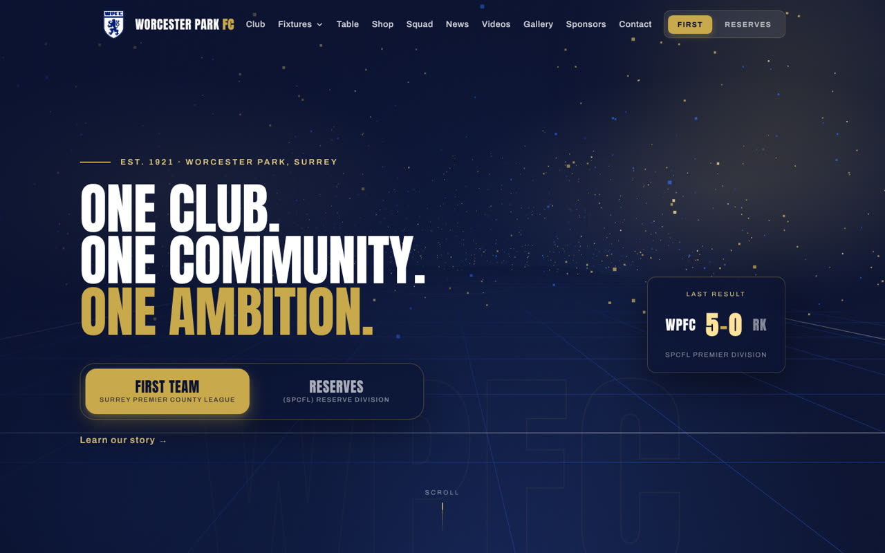

01 · Football club · Live data platform
Worcester Park FC
The official site of a Surrey Premier County League club, with league tables, results, fixtures, top scorers and squads that track FA Full-Time automatically. First Team and Reserves live in one page with a single switch, and match-day clips, a YouTube section and the club shop feed sit alongside the data.
- HTML / CSS / JS
- Netlify
- FA Full-Time scraper
- Three.js hero
- Playwright checks